Discover · 发现
调研竞品、找参考截图、跨界脑暴，为设计决策提供真实证据。
- design-research — 深度调研 + 下载参考截图，输出结构化研究报告
- quick-references — 快速找参考截图，按模式分组，不写完整报告
- design-brainstorm — 跨界联想，从没人看的领域挖可用灵感，输出 3 个差异化方向
竞品分析
最佳实践
参考截图
主 skill Monkren Design 是设计智能体入口，按用户意图路由到对应阶段。Discover 找证据，Define 锁方向，Create 出产出，Review 做审查，Deliver 出报告，Tools 管灵感源。
调研竞品、找参考截图、跨界脑暴，为设计决策提供真实证据。
项目启动提问、锁定美学方向、把「好看」变成可复用设计语言。
从低保真线框到可交互原型，从设计系统提取到组件清单，覆盖创作全链路。
可访问性、反 AI slop、视觉层级、交互状态、细节打磨五项专项审查。
由 execution.md 驱动，输出报告、Demo、评分提升建议。
接入/断开外部灵感源，贯穿全流程。
主 skill——设计智能体入口，识别用户意图路由到对应阶段，协调全流程。
从 10 维度多视角审查到 SwiftLint 规则生成，从 40 种设计哲学库到 Lazyweb 真实产品证据，每个能力都输出可操作的修复建议，不是泛泛而谈。
哲学一致性、视觉层级、细节执行、功能性、创新性——每个维度独立 0-10 分，附证据段落和修复方向。
视觉审美、交互体验、品牌一致性、可访问性、商业转化、用户体验、使用流程、功能使用旅程、UI 界面设计、功能展示合理性。
自动扫描颜色（HEX/RGB/HSL）、字体（font-family）、间距（非 4/8 倍数）三类硬编码，输出替换 token 建议。
17 流派 × 80 种设计哲学——从 Pentagram 信息建筑到 AI 人机共创，覆盖经典设计理论与 2026 前沿趋势，推荐 3 个差异化方向。查看完整库 →
使用 Lazyweb 搜索真实产品截图作为视觉证据，哲学判断和设计规则优先，截图佐证，不交付空洞的建议。
9 条自定义规则，自动检测硬编码字体、间距、颜色值、非标准间距、自定义按钮替代设计系统等问题。
移动端 App、桌面端软件、Web 应用、PPT/演示文稿、插画、角色 IP——每种类型有独立审查要点。查看 platforms →
结论层（快速概览）→ 诊断层（维度卡片 + 专项检测）→ 行动层（Quick Wins + Fix 清单），让用户清楚改什么。查看 3 份已发布样本 →
Monkren 自身的设计语言：黑色画布、白色排版、无圆角几何、1px 边框。所有决策都服务于一个目标——让内容被看见，让审查有依据。
设计从已有 design system / 品牌规范 / 真实资产长出来，拒绝凭空做 hi-fi。
识别并剔除训练语料中的视觉最大公约数，只保留有品牌依据的视觉选择。
每个元素必须 earn its place。警惕 data slop、iconography slop、gradient slop。
没有真实数据时，诚实的占位优于拙劣的伪造。诚实是 hi-fi 的一部分。
需要设计方向建议？从 17 流派 80 种哲学中推荐 3 个差异化方向，每个方向含设计师/机构名、标志性视觉特征、气质关键词、最佳执行路径。
数据不是装饰，是建筑材料。
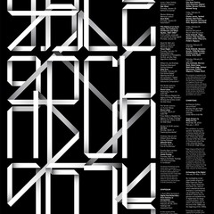
极度克制的颜色，瑞士网格，字体排印作为主要视觉语言，60%+ 留白。
→ HTML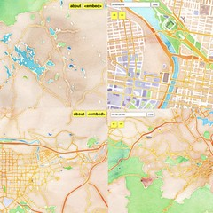
地图学思维应用于信息设计，温暖的可视化色调，算法生成的有机图形。
→ 混合极端的内容层级清晰度，只使用系统字体，蓝色超链接传统的坚守。
→ HTML每一个像素都必须承载信息，科学期刊的严谨+设计的优雅。
→ HTML动态不是装饰，是叙事节拍。
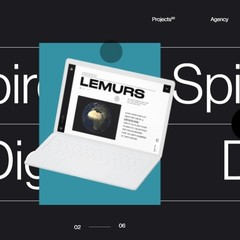
丝滑的视差滚动，电影化的分镜叙事，大胆的空间留白。
→ 混合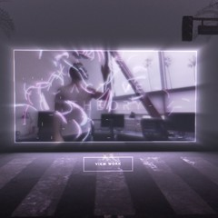
WebGL 沉浸式叙事，互动装置的网页化表达。
→ AI 生成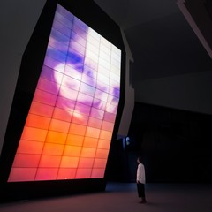
粒子系统与流体模拟作为艺术语言。
→ AI 生成实验性互动，创意技术整合，玩心与工程并重。
→ 混合删除到不能再删，剩下的就是本质。
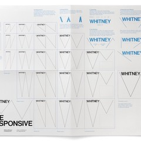
概念极简，蒙德里安式构图，反商业。
→ 混合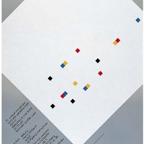
数学精确的 8pt 网格，绝对的左对齐或居中，单色或双色方案。
→ HTML大胆对比，深色画布，超大排版，反装饰而装饰感强。
→ HTML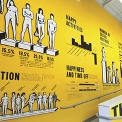
情感化排版，刺绣与摄影的并置，感性的极简。
→ AI 生成工具可见，过程可见，作品即过程。
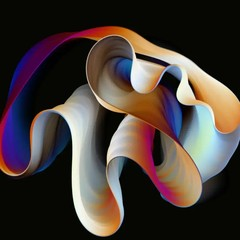
手绘感的算法图形，实时生成艺术，黑白的纯粹表达。
→ AI 生成代码生成抽象艺术，机械与有机交织。
→ AI 生成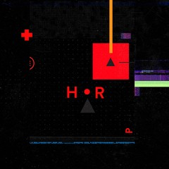
电影化视觉，赛博朋克美学，沉浸式叙事。
→ AI 生成科幻界面设计，电影 UI 范本，HUD 美学。
→ AI 生成留白是内容，简洁是哲学。
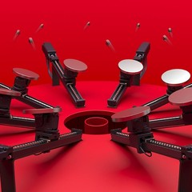
日本的工程化设计思维，简洁与功能的统一。
→ HTML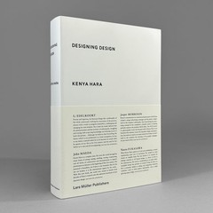
极致的留白（80%+），纸张质感的数字化，触觉的视觉化。
→ HTML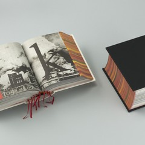
书籍作为雕塑，物质性的极致表达。
→ 混合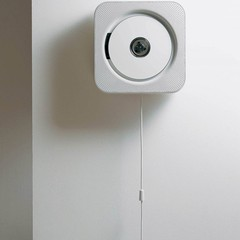
无意识设计，物件与行为的自然吻合。
→ 混合系统是骨架，真实是皮肤。
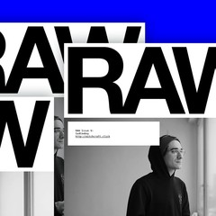
裸露的 HTML 结构作为视觉语言，系统字体，零装饰，零圆角。
→ HTML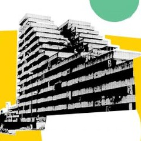
实用主义的极简，透明材料，功能即形式。
→ HTML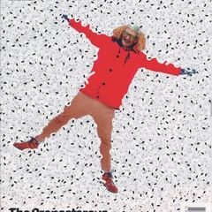
杂志设计的商业极简，封面叙事与数据排版。
→ HTML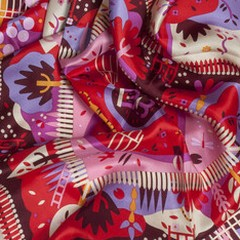
插画与版式的诗意组合，几何与色彩的克制。
→ 混合反规则是规则，装饰即宣言。
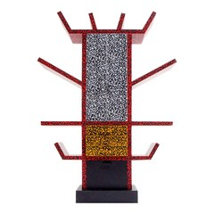
孟菲斯运动的色彩狂欢，几何与波普的混合。
→ AI 生成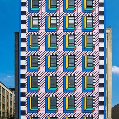
大胆的几何图案，活力色彩，城市尺度的视觉。
→ AI 生成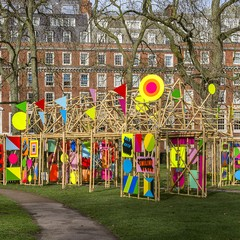
大型装置艺术，色彩与结构的庆典式构图。
→ 混合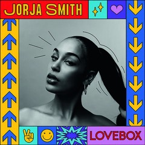
排版的实验性，音乐视觉的先锋，反工业的工业感。
→ AI 生成形式追随生长，结构回应自然。
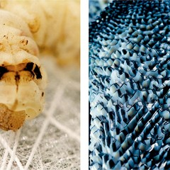
自然与技术的融合，参数化设计，材料生态学。
→ 混合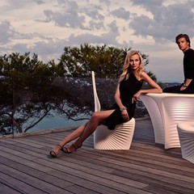
有机形态的结构美学，自然界的工程逻辑。
→ AI 生成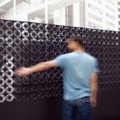
科技与光影的诗意互动，未来景观的设计。
→ AI 生成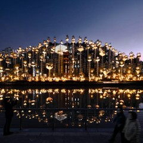
材料创新，触感与情感，建筑级装置感。
→ AI 生成过去想象的未来，现在是过去。
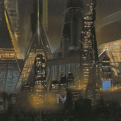
未来交通工具设计，赛博美学奠基，《银翼杀手》视觉源头。
→ AI 生成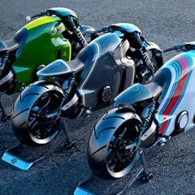
科幻交通工具的工业设计，《TRON: Legacy》视觉语言。
→ AI 生成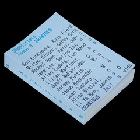
当代复古未来，金属质感与几何，平面设计的硬件感。
→ AI 生成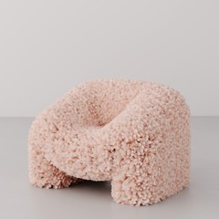
数字物质的诗意，渲染现实主义，元宇宙美学的代表。
→ AI 生成密度是丰富，不是混乱。
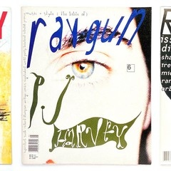
颠覆排版规则，混乱中的秩序，《Ray Gun》开创性编辑设计。
→ AI 生成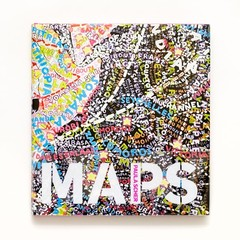
字体作为图像，色彩与排版的对话，公共视觉的大声量。
→ 混合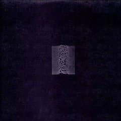
后朋克视觉文化，专辑封面的设计语言。
→ 混合室内设计到平面，纹理与色彩的盛宴，材料的即兴演出。
→ 混合界面是行为的延伸。
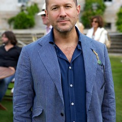
硬件即软件，无缝材质与克制细节，让技术隐于无形。
→ iOS / 产品Less but better，好设计是尽可能少的设计，Apple 设计哲学的源头。
→ 产品设计动态色彩、自适应组件、跨平台一致性的设计语言系统。
→ Android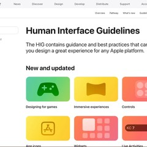
清晰、遵从、纵深，iOS/macOS 交互范式与视觉规范的基石。
→ iOS / macOS设计的起点是人，不是屏幕。
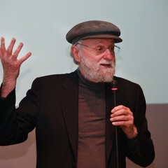
affordance 与示能，以人为中心的可用性思考，从门把手到界面。
→ 用户研究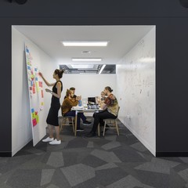
共情→定义→构思→原型→测试，以人为本的创新方法论。
→ 服务设计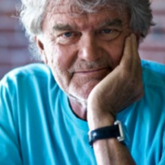
形式追随情感，产品与用户之间的情感共鸣驱动设计决策。
→ 产品策略10 条可用性启发式原则，UX 研究领域的黄金标准。
→ UX 研究网页是可生长的系统。
语义化、可访问性与渐进增强，现代网页标准的奠基之声。
→ HTML / CSS流体网格、弹性图片、媒体查询，一个网址适配所有屏幕。
→ 前端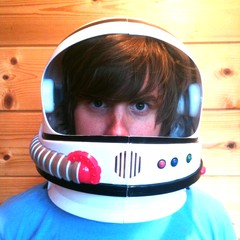
原子→分子→有机体→模板→页面，组件化设计系统的构建方法论。
→ 设计系统开发者优先的设计语言，API 美学的可视化表达。
→ 开发者工具AI 不是替代设计师，是设计思维的延伸与放大器。
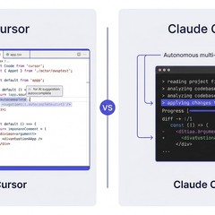
AI 内联预测、上下文感知、diff 审阅——AI 原生 IDE 的设计原则：AI 不应是弹窗，应是编辑思维流的自然延伸。
→ AI 生成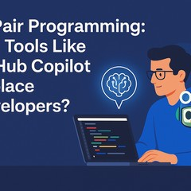
从"写代码"到"描述意图"——AI 设计的关键是预测用户意图而非等待指令，从命令式到声明式交互的范式转移。
→ AI 生成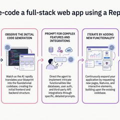
用自然语言对话替代传统 IDE 操作，降低创造门槛——"用你的想法，而非代码来构建"。
→ AI 生成引用溯源、追问式对话、结构化答案——AI 产品设计的核心是建立"可信度信号"，让用户理解 AI 的知识边界。
→ AI 生成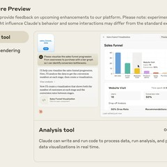
AI 生成内容的即时预览、迭代、版本对比——设计反馈循环从"天"缩短到"秒"，实时共创成为新常态。
→ AI 生成AI 生成的 UI 代码需要设计审查——"提示词即设计稿"时代，设计师的角色从执行者变为质量门禁。
→ AI 生成当 AI 自主执行任务时，进度可视化、可撤销操作、人工接管点——信任是 Agent UX 的第一设计原则。
→ AI 生成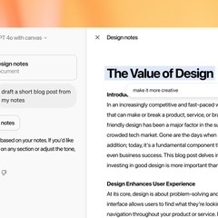
文本+代码+图像+画布——AI 协作界面从单模态对话走向多模态工作台，设计空间被重新定义。
→ AI 生成最好的工具设计让人感受不到工具的存在。
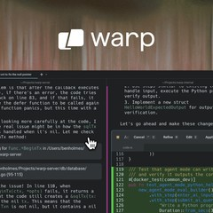
块级编辑、AI 内联、可视化输出——CLI 不需要停留在 1970 年代。
→ 开发者工具键盘优先、毫秒级响应、像素级排版——工具类产品的设计哲学是"消除摩擦"。
→ 开发者工具Git push 即部署、预览链接、全球边缘网络——"让复杂的事情简单到一键完成"。
→ 开发者工具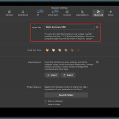
轻量、可扩展、键盘流——CLI/工具设计哲学：用最少的交互完成最多的任务。
→ 开发者工具2026 年的设计不再是"好看"，而是"好用、可信、可持续"。
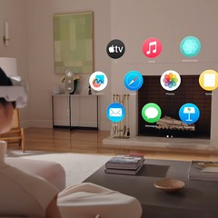
空间计算打破屏幕边界——设计从 2D 平面走向 3D 空间，眼动、手势、语音构成后屏幕时代的交互语法。
→ 混合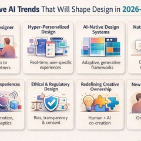
2026 产品设计不再"加入 AI 功能"，而是从 AI 能力出发重新定义产品形态——AI 是设计原点。
→ AI 生成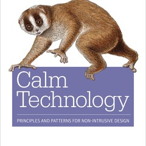
2026 年屏幕疲劳达到临界点，设计趋势转向"少打扰、多感知"——信息在最合适的时机以最轻量的方式呈现。
→ HTML2026 年设计师与工程师的边界加速模糊，AI 辅助设计工程化——设计即代码、代码即设计。
→ 混合2026 年用户不再直接操作界面，而是监督 AI Agent 执行——设计从"按钮"转向"指令+确认"范式。
→ AI 生成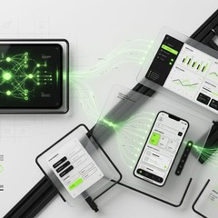
2026 年设计师角色从"像素绘制者"转变为"AI 输出的策划者与审核者"——设计品味成为核心竞争力。
→ AI 生成EU AI Act 合规、偏见检测、透明度报告——2026 年设计必须内置伦理考量，不再只是"好看"。
→ HTML低碳网页、暗色模式默认、减少数据传输——设计的环境责任成为 2026 必须项，可持续即设计原则。
→ HTML经典不会过时，它们是设计语言的语法。
形式服从功能，几何纯粹，工业美学——现代设计的源头。
→ HTML网格系统、非对称布局、无衬线字体、客观摄影——影响了整个 20 世纪的设计语言。
→ HTML"如果你能设计一件事，你就能设计一切"——极致的系统化思维，一生只用 6 种字体。
→ HTML1960 年代就用像素网格设计字体，预见了数字时代的字体排印——经典也可以激进。
→ HTMLMondrian 的红黄蓝+黑白网格——抽象几何是宇宙秩序的视觉表达，影响现代 UI 配色与布局。
→ HTML裸露 HTML 结构、系统字体、无装饰——反精致主义的诚实美学，在 AI 生成内容泛滥时代回归真实。
→ HTML空寂、不对称、留白之美——日本传统美学与现代平面设计的完美融合，东方设计哲学的典范。
→ HTML系统设计方法论、跨学科协作——影响 Braun/Apple 设计体系的德国理性主义源头。
→ HTML每一份样本都是用 Monkren Design 实际跑出来的产物——设计审查、PR 总结、事故复盘、工程文档、交互解释。当前 3 份已发布（其余 21 份规划中），打开看就是一份完整的样本报告。
核心 5 维度 + 10 维度多视角 + 6 种平台专项，配合 4 条评分铁律确保客观，3 级严重度让修复有优先级。
每个维度独立 0-10 分，评分必须引证具体元素/文件/行号，禁止评分通胀。
4 条铁律确保审查评分客观，不交付有偏见或自相矛盾的报告。
每个问题标记 P0/P1/P2 严重度，修复有优先级——先改致命问题，再优化细节。
工作流足够紧凑，agent 可以在单次会话中完成；也足够结构化，避免审查变成随意的装饰建议。
确认输入格式（截图/HTML/代码/Figma）、设计类型（App/Web/PPT/插画/角色 IP）、审查视角、审查范围、报告格式。用户描述模糊时拒绝猜测。
搞清楚审的是什么——整体还是局部？单页还是全流程？有没有品牌规范或设计系统？
找到参照系——读代码提取 token、组件、品牌资产；理解现有设计系统和品牌规范。
5 步系统化提取品牌资产：定位 → 下载 → 提取色值 → 编写摘要 → 确认。素材质量遵循 5-10-2-8 原则。
使用 Lazyweb 搜索真实产品截图作为视觉证据，但截图是佐证不是标准——哲学判断和设计规则优先。
5 维度评审 + 多视角审查 + 平台专项审查 + 硬编码检测 + 合规性检查 + 反 slop 检查。
三层递进报告：结论层（快速概览）→ 诊断层（维度卡片 + 专项检测）→ 行动层（Quick Wins + Fix 清单）。
评分与描述一致性检查 + Fix 可操作性验证 + 自相矛盾检查，不交付有漏洞的报告。
介绍页给的是项目骨架，四层知识图谱（信念 / 标准 / 方法 / 执行）在 references/ 下独立维护。装上 skill 后 agent 会按需读，访客可以提前看。
一行命令安装，然后直接说话。没有按钮、没有面板——对话即审查。
# 安装 Skill
$ npx skills add monkren/monkren-design
# 然后直接对话
> 简单审查这个设计
> 深度审查这个项目
> 全流程审查整个 App
> 检测这段代码里的硬编码颜色和间距值
> 这个页面有没有违反设计系统规范？
> 推荐 3 个适合这个产品的设计方向
> 帮我生成 SwiftLint 规则检测硬编码设计值
> 这个 PPT 需要改什么，给出 Quick Wins